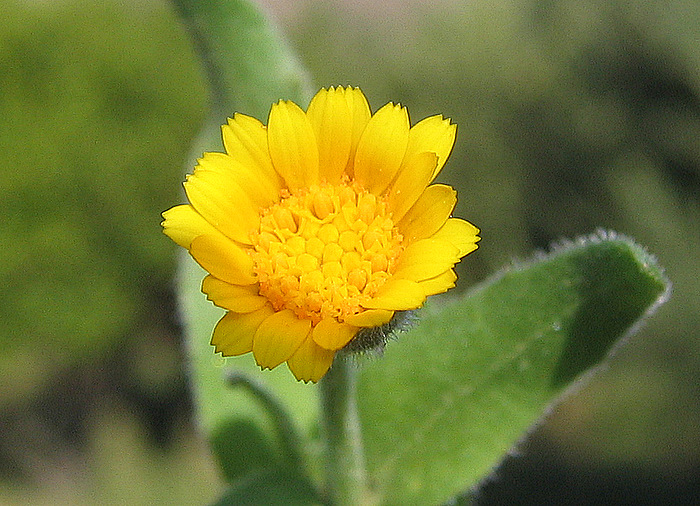

")
| PHRYGANA | Fauna | Flora |
additions nouveautés |
espèces species |
contact -
info - commentaires phrygana1 (at) gmail.com |
| Particularités crétoises | Galles et mines |
| Calendula arvensis (VAILL.) L. |
| 63 | Flora | ASTERACEAE | Calenduleae | Calendula L. |
|
Calendula arvensis Agia Galini 18 octobre 2007 |
| fr: le Souci des champs (en) Field Marigold (de) Acker-Ringelblume (nl) Akkergoudbloem | |
| Feuilles: allongées, lancéolées, à marge légèrement dentée, terminées par une pointe courte aiguë. | |
| Tige feuillée. Plante glanduleuse, odorante. | |
| Fleurs: ligulées (1 à 2 rangs) et tubulées jaunes. Capitule assez petit (diamètre de 12 à 27 mm). La surface du réceptacle est dépourvue de paillettes et d'écailles entre les fleurs. Bractées de l'involucre toutes de la même taille, aiguës au sommet. | |
| Fruits: polymorphes (les akènes intérieurs en anneau, les médians en forme de C), gonflés, épineux et pointus. | |
| Hauteur: 15 - 30 cm | Type biologique: thérophyte - hémicryptophyte bisannuel |
| Floraison: février mars avril mai septembre octobre novembre décembre | |
| Altitudes: 0 - 780 m | |
| Statut en Crète: indigène -- native | |
| Biotopes en Crète: bords de route, phrygana, lieux secs et rocailleux, olivaies, terrains vagues, champs cultivés. | |
| Distribution: Europe méridionale et de l'Ouest, Afrique du Nord, Proche-Orient | |
| Plante-hôte pour: | ||
|
|
|
|
| Cucullia calendulae | Heliothis peltigera | |
|
 Calendula arvensis Agia Galini 18 octobre 2007 |
Calendula arvensis Agia Galini 18 octobre 2007 |
|
Calendula arvensis Agia Galini 18 octobre 2007 |
|
Calendula arvensis Agia Galini 16 décembre 2010 |
|
Calendula arvensis Melambes (Agios Giorgos) 26 décembre 2010 |
|
Calendula arvensis Kourtes (Zaros) 21 décembre 2010 |
|
Calendula arvensis Melambes (Agios Giorgos) 15 décembre 2011 |
| 16 décembre 2011 |
| © paul fontaine -- © Phrygana.eu 2007 -- 2013 |